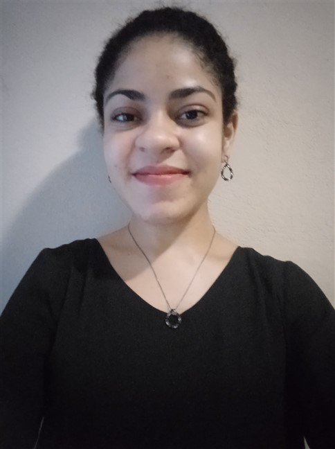
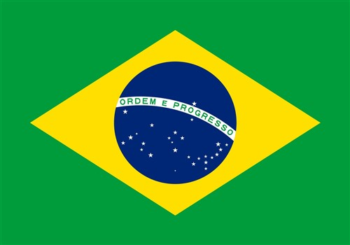

About Me
My name is Artemísia Porto. I am from Cruzeiro, São Paulo, Brazil, but I currently live in Jundiaí, São Paulo, Brazil. I graduated in the Bachelor's in Geophysics last year at the University of São Paulo and I work at a company processing and interpreting geophysical data. I am studying Software Development since I finished my first degree. I got married nine months ago and my husband's name is Julio. I love to roller skating, to watch korean dramas and movies, and to assemble puzzles.
São Paulo, Brazil
São Paulo is a state where you can find different customs and cultures. It is aknowledge as an economic potency in Brazil, which has a touris focused on business, culture, beautiful natural forest and beaches. There is also cozy places to travel in the interior of the state.